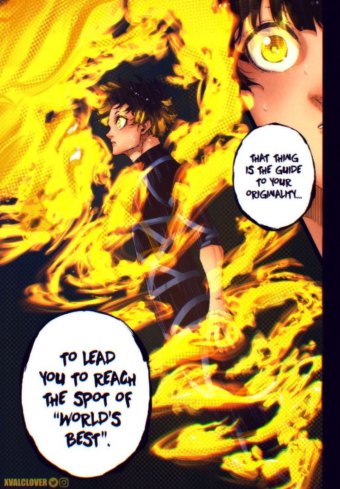
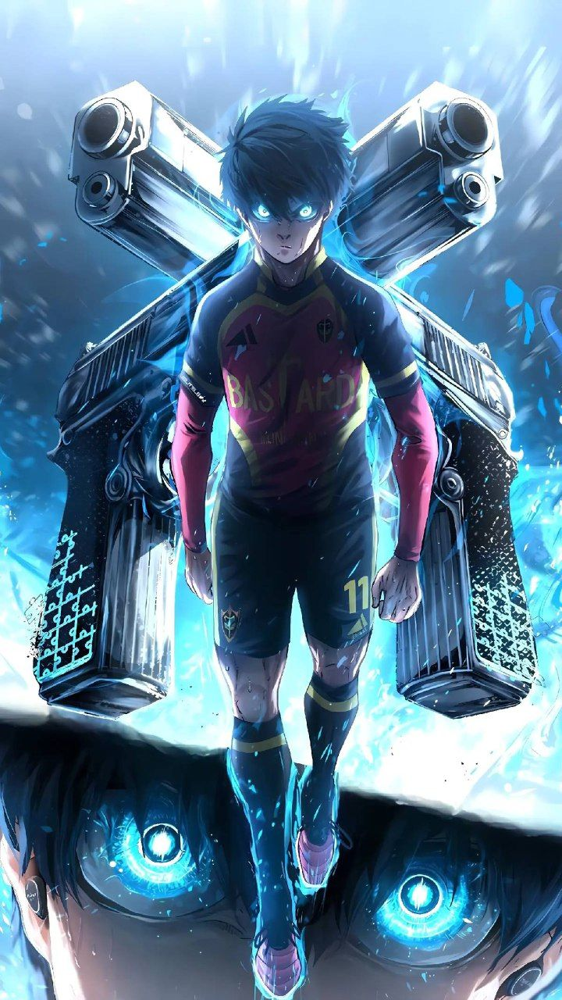

Meguru Bachira is an elite, striker focused playmaker in Blue Lock known for top tier dribbling, high level, creative ball control 94+, and an evolving monster style that transitioned from selfish to reading defender movements. His stats highlight high agility, 90+ balance, and incredible, unpredictable feints.


Yoichi Isagi stats in Blue Lock reflect an elite, highly intelligent playmaker and spatial awareness striker, rapidly evolving from a B-tier player to an S-tier threat. He thrives on high football IQ, meta-vision, and "direct shots," utilizing top-tier positioning rather than raw physical strength to dominate games.


Rensuke Kunigami in Blue Lock is a physical striker and tank archetype, defined by his immense strength, 188 cm (6'2") frame, and powerful ambidextrous shooting, particularly with his left foot. Post-Wildcard, his stats emphasize high physical prowess (strength, stamina, speed) to dominate defenders, often acting as a tankcdribbler who rarely loses possession against weaker opponents.